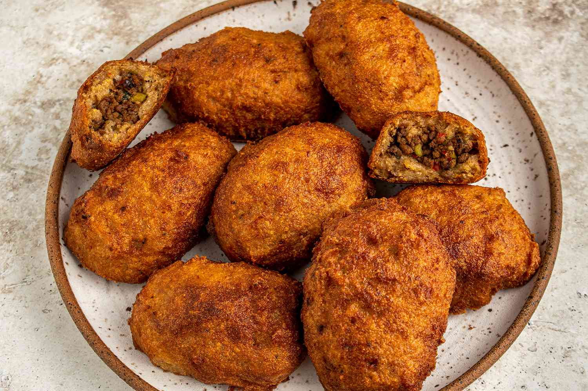

Alcapurrias

Puerto Rican fritters made from a seasoned dough of grated tubers or green
bananas, filled with a savory mixture, and deep-fried to golden perfection.
Alcapurrias are a traditional Puerto Rican dish made from a dough consisting
primarily of grated tubers, typically yautía (taro root) or green bananas,
mixed with plantains, and sometimes cassava (yuca). The dough is seasoned
with ingredients like garlic, onions, and various spices.
The dough is then filled with a savory mixture, often made with ground
meat (such as beef, pork, or chicken), but seafood fillings like crab
or shrimp are also popular. Once filled, they are typically shaped into
elongated or oval forms, resembling small logs, and then deep-fried
until golden brown and crispy.
Alcapurrias are known for their delicious blend of flavors and textures,
with the crispy exterior contrasting with the savory filling. They are often
served as a popular street food snack or appetizer at gatherings and
celebrations throughout Puerto Rico and in Puerto Rican communities
elsewhere.
Ingredients -
- 1 lb green banana
- 1 lb yautia
- 1 packet of sazon
- 2 tbsp of achiote oil
- Preferred amount of adobo
Instructions
Make the picadillo:
- Heat olive oil in a large frying pan, add onions, and cook until translucent
- Add the ground meat and use a spatula or wooden spoon to break it down
- Add tomato sauce, sazon, sofrito and olives and stir well, until all the condiments
have integrated.
- Cook picadillo until cooked through. Around 12-15 minutes. Set aside.
Make the masa:
- Peel green bananas and yautia. Chop in small pieces, around 1-inch cubes.
- Add the vegetables to the food processor in small batches until a smooth
masa is created. In between batches, add sazon and achiote oil. Be patient,
this will take several minutes as the yautia is very tough. Keep pulsing at
high until the masa is smooth.
- Place the masa in a storage container and refrigerate for an hour. You can
bypass this step if you’re hangry BUT it helps make the masa more pliable.
If you have the time, do it!
- In a large frying pan, add enough oil (I use canola oil) to fill the pan,
and warm in medium heat.
Create Alcapurrias:
- While the oil heats up, assemble the alcapurrias. In a banana leaf, spoon a
little bit of achiote oil (around ½ tsp) and then spoon around ⅓ to ½ cup of
the masa and spread into a circle.
- Hold the banana leaf with the masa in your hand like it’s a hot dog bun and add
around ¼ cup of picadillo. The key is not to overfill them because the alcapurria
will break in the fryer. With a spoon, move the masa around the picadillo to
cover the alcapurria. If you need to grab a little more masa to cover the meat, go
ahead and do it. The key is not to leave
any meatexposed because they will fall apart.
- Add the alcapurria to the hot oil. Tip: make sure the oil is HOT. Cook for 3-4
minutes on both sides crispy.
- Transfer to a plate with paper towels to absorb the oil.
- Enjoy!
Credit to Jessica van Dop DeJesus for her wonderful recipe!